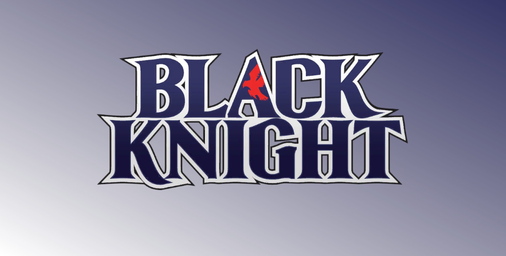
Le Chevalier Noir (Dane Whitman) (Terre-616)
.jpg)
Origines :
Dane Whitman est né à Gloucester, dans le Massachussetts, dans une riche famille.
Dane se lança dans une carrière scientifique et obtint une maîtrise en physique, se spécialisant ensuite en génétique, en génie mécanique ainsi que dans plusieurs autres domaines de pointe, et tomba amoureux d'Ashima Chopra.
Leur relation fut interrompue lorsqu'Ashima apprit qu'elle était atteinte d'un cancer en phase terminale et que sa famille comptait déménager à Londres pour qu'elle puisse suivre son traitement.
Dane, effrayé par la situation, s'éloigna d'Ashima et ne lui rendit pas visite avant son décès.
A son insu, Ashima avait donné naissance à leur fille, Jackie, qu'il ne rencontrera qu'à l'âge adulte.
L'oncle de Dane, Nathan Garrett, était un biologiste respecté qui opérait en secret en tant que super-vilain sous le nom de Chevalier Noir.
Lors d'un affrontement avec Iron Man, ce dernier fut grièvement blessé, et convoqua Dane pour lui avouer sa double identité.
Honteux du déshonneur qu'il avait jeté sur sa famille, Garrett demanda à Dane d'utiliser ses connaissances et le matériel qu'il lui avait laissé pour redorer le blason du Chevalier Noir.
Dane lui promit de racheter l'héritage familial tout en restant dans le pacifisme.
Déterminé à surmonter la honte pesant sur sa famille, Dane se consacra à la recherche scientifique, espérant accomplir quelque chose qui pourrait effacer les crimes de son oncle.
En expérimentant sur les forces magnétiques dans le but de communiquer avec une forme de vie extraterrestre, il attira involontairement Magnéto et le Crapaud sur Terre.
S'ensuivit alors un affrontement durant lequel Dane, grâce au matériel et aux recherches génétiques de son oncle, transforma un cheval lambda en Aragorn, un cheval ailé, et adopta pleinement l'identité du Chevalier Noir.
Lors de sa première vraie mission, les Avengers le prirent pour son oncle, ce qui provoqua une brève confrontation avec Hawkeye, avant qu'ils ne comprennent que ce dernier tentait de les aider à affronter Magnéto.
Un peu plus tard, Dane reçut une invitation destinée à son oncle, l'invitant à rejoindre une nouvelle incarnation des Maîtres du Mal.
Il accepta l'invitation avec l'intention d'infiltrer l'organisation et d'avertir les Avengers.
Cependant, le mystérieux chef du groupe, le Crimson Cowl, découvrit la supercherie et ordonna aux autres membres de le capturer avant qu'il ne puisse transmettre son avertissement.
Dane parvint cependant à leur échapper et avertit les Avengers, tout en révélant que le Crimson Cowl s'avérait en réalité être Ultron-5, contribuant à la défaite des Maîtres du Mal.
Ses actions lui valurent la confiance des Avengers et une place provisoire au sein de l'équipe.
Après avoir hérité du château de Garrett, Dane se rendit en Angleterre et rencontra l'esprit de son ancêtre, Sir Percy de Scandia, qui lui révéla qu'il était le dernier héritier d'une tradition héroïque remontant au règne du roi Arthur, et lui confia la Lame d'Ébène, une épée maudite forgée à partir d'une météorite et enchantée par Merlin.
Par l’intermédiaire de Victoria Bentley, Dane entra ensuite en contact avec le Docteur Strange et l'aida à poursuivre les Fils de Satannish dans la Sixième Dimension.
Ils vainquirent Tiboro et libérèrent les captifs du culte.
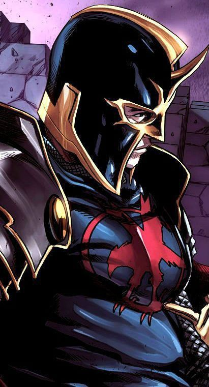
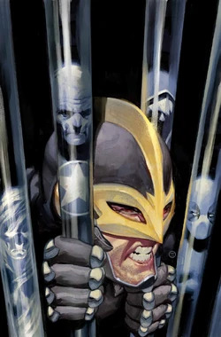
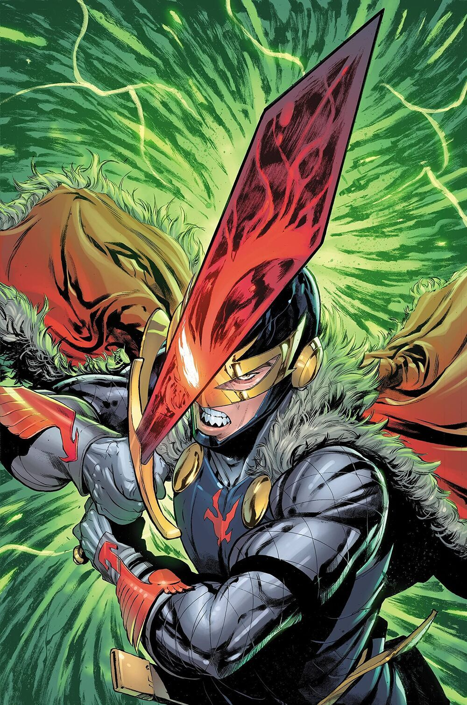
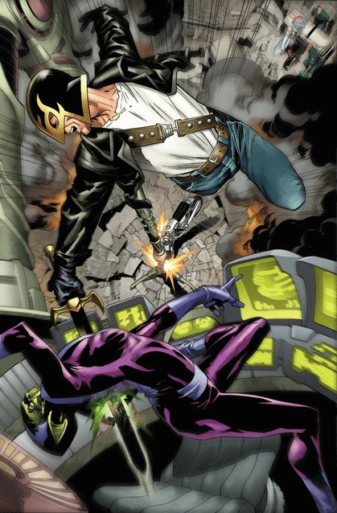
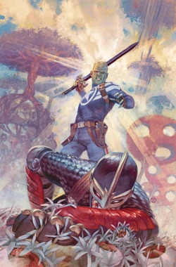
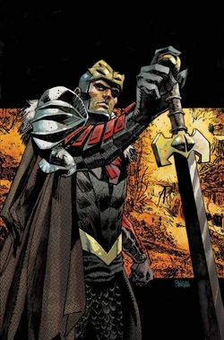
.jpg)
.jpg)
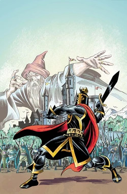
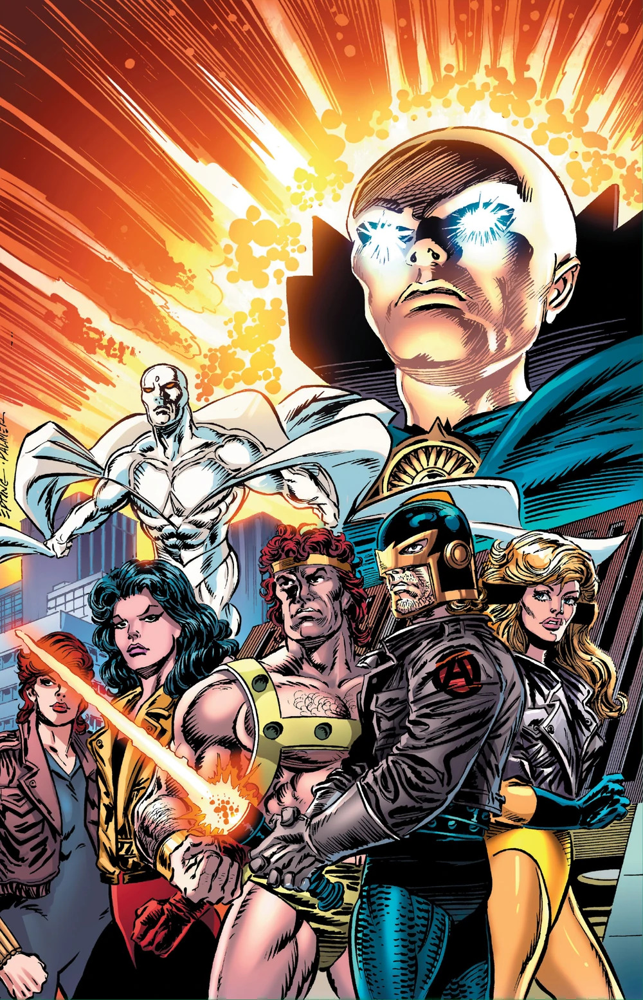
Personnalité :
Dane Whitman est un homme de principes qui accorde une grande importance à l'honneur, la loyauté et à la responsabilité.
En tant que physicien de formation, il possède un esprit scientifique qui le distingue des autres héros davantage guidés par leurs pouvoirs ou leurs instincts.
Il aime comprendre le fonctionnement des choses, analyser les situations et trouver des solutions pratiques.
Il est courageux, n'hésitant pas à prendre des risques pour protéger les autres, même lorsque ses chances de victoire sont faibles.
Capacités :
A l'origine, Dane Whitman ne possède aucun super-pouvoirs, mais c'est un très bon combattant à l'épée ainsi qu'un fin stratège.
Sa principale arme est sa Lame d'Ébène, un artefact très ancien et maudit. Cette lame serait apparemment incassable.
Elle peut traverser toute matière hormis l'adamantium et les métaux plus durs d'origine extra-terrestre, extra-dimensionnelle ou mystique.
S'il est séparé de son épée, un lien mental permet à son porteur de retrouver la lame, même si cela doit prendre plusieurs années, car il est attiré par cette dernière.
Maudite, la lame force son porteur à laisser échapper son penchant maléfique ou cruel.
Il a également utilisé une épée photonique dont la lame laser troublait le système nerveux, paralysant ses adversaires.
Cette épée pouvait également être utilisée comme un bouclier de force après inversion de la polarité.

.jpg)
Apparence :
Le costume traditionnel du Chevalier Noir est composé d'une armure de mailles noire recouverte d'une tunique sombre, avec quelques éléments rouge autour du col et des épaules.
Il porte un emblème rouge sur la poitrine représentant un aigle, associé à la maison de Scandia et à son héritage chevaleresque.
Il porte également un casque épousant la forme de sa tête laissant ses yeux, son nez ainsi que sa bouche visibles.
Ses contours dorés encadrent son visage, et il a une petite crête ou un pic au sommet du crâne.
Il porte également une cape fixée à ses épaules par des attaches dorées, renforçant son allure héroïque et chevaleresque.
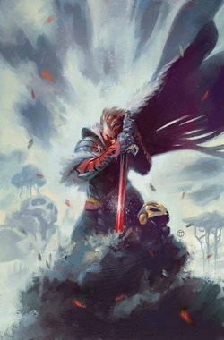
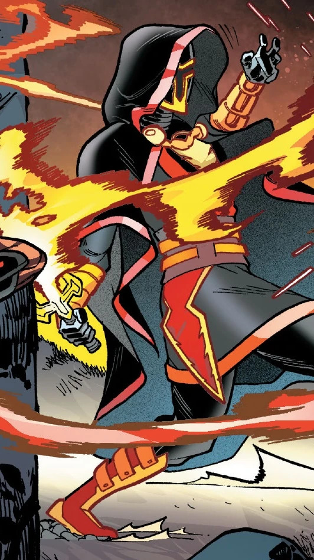
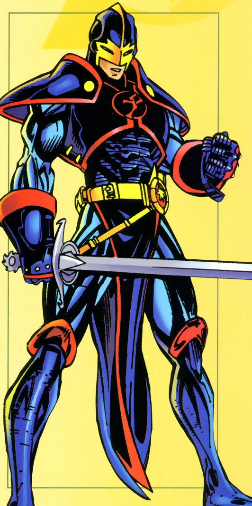
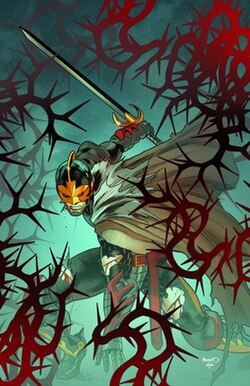
.jpg)
.jpg)
.jpg)
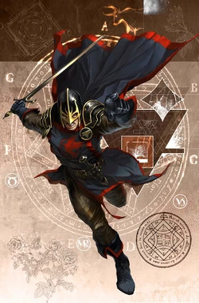
Les principaux ennemis de Black Knight
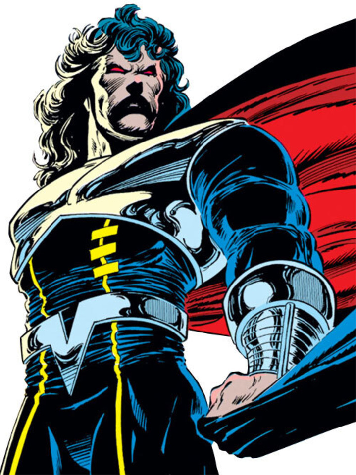
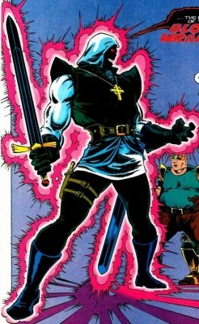
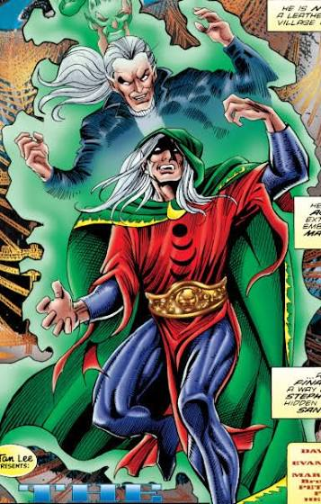
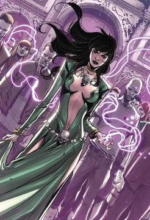
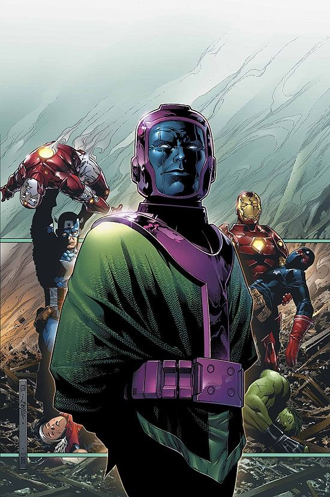


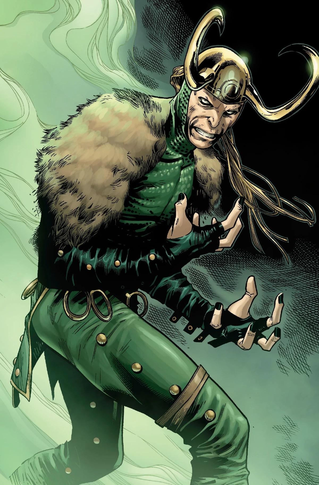
Équipes affiliées